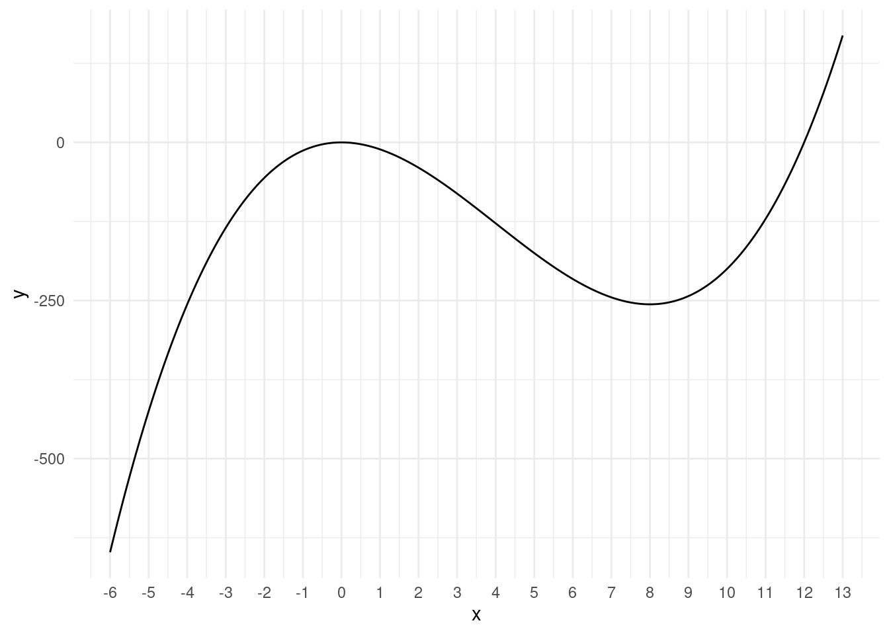
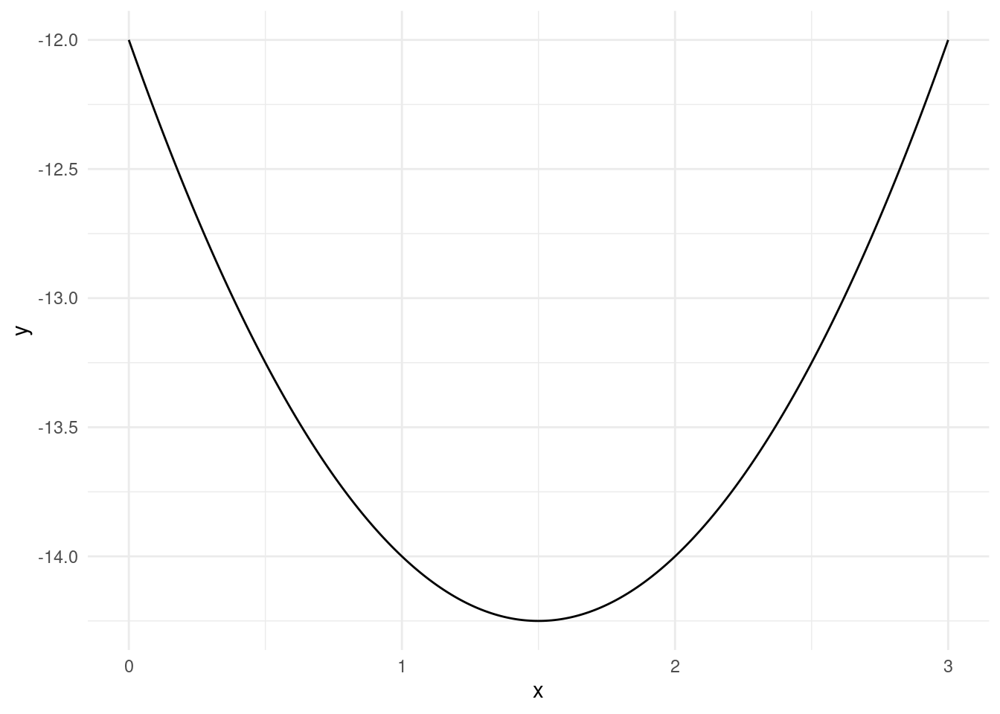
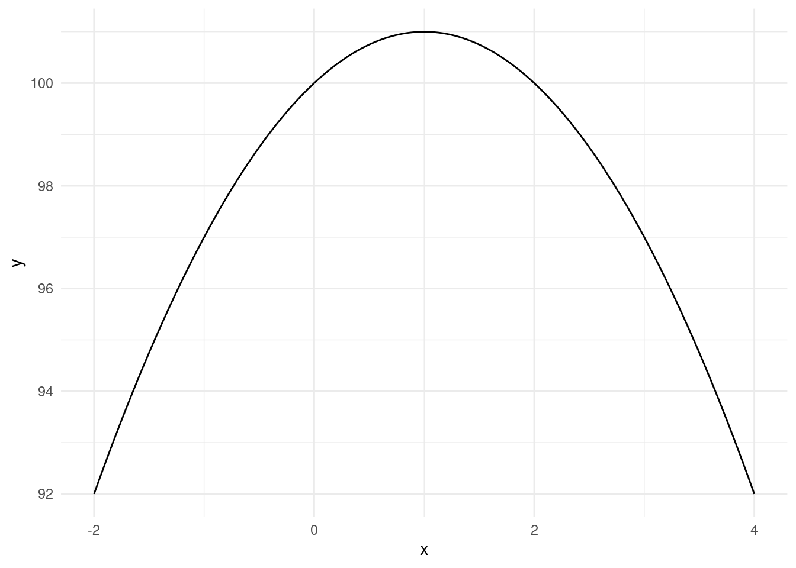
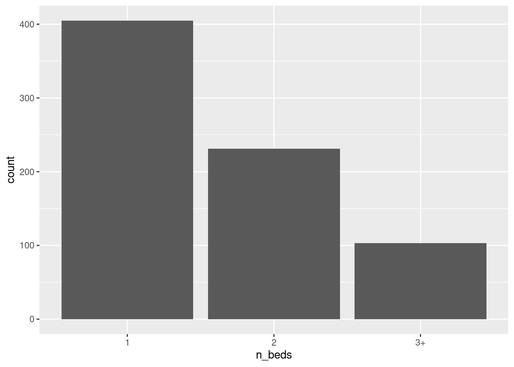
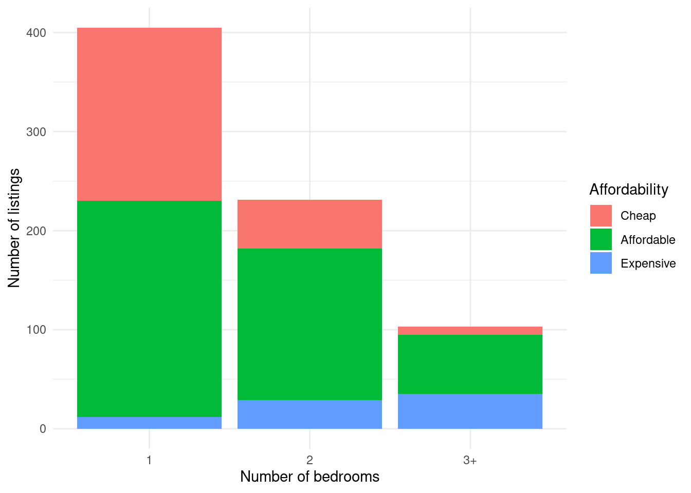

f1 <- function(x) {
y <- exp(x) / (1 + exp(x))
return(y)
}Tutorial Exercises Week 6
Question 1
Write an R function that calculates f(x) in the equation below:
f(x) = \frac{e^x}{1+e^x}
- What is f(-2)?
- What is f(0)?
- What is f(2)?
In each case provide your answer rounded to 4 decimal places.
Solution
We can create the function as follows:
We can evaluate the function at the 3 values with:
f1(c(-2, 0, 2))[1] 0.1192029 0.5000000 0.8807971We can get R to also round the output to 4 digits:
round(f1(c(-2, 0, 2)), digits = 4)[1] 0.1192 0.5000 0.8808Finally, it’s also worth mentioning that this function has a special name. It is the standard logistic function and there is a built-in function in R for it called plogis(). We can confirm that it gives the same answers:
plogis(c(-2, 0, 2))[1] 0.1192029 0.5000000 0.8807971Question 2
Plot the function
f(x) = x^3 - 12x^2
in the interval [-6, 13].
At what values of x are the extreme points of this function? Both extreme points are integers (whole numbers).
Hint: Add the layers theme_minimal() + scale_x_continuous(breaks = -6:13) to add more line verticial breaks to help see where the extreme points are.
Solution
We can create the function with:
f2 <- function(x) {
y <- x^3 - 12 * x^2
return(y)
}We then create a sequence of values x from -6 to 13. Going in steps of 0.1 should be good enough for the plot.
library(ggplot2)
x <- seq(-6, 13, by = 0.01)
y <- f2(x)
df <- data.frame(x, y)
ggplot(df, aes(x, y)) +
geom_line() +
theme_minimal() +
scale_x_continuous(breaks = -6:13)
We can see that there is an extreme point at x=0 and at x=8.
We can also do some calculus to confirm this. Taking derivatives of f(x) = x^3 - 12x^2:
f^\prime(x) = 3x^2 - 24x The extreme points occur when f^\prime(x)=0. This is when: 3x^2 - 24x=0 Divide across both sides by 3: x^2 - 8x=0 We can see that both x=0 and x=8 solve this equation: \begin{split} 0^2 - 8\times 0&=0 \\ 8^2 - 8\times 8&=0 \\ \end{split} Therefore these are the extreme points.
If we take the second derivative of f(x) we get:
f^{\prime\prime}(x) = 6x - 24 Using the values of the extreme points we get: f^{\prime\prime}(0)=6\times 0 -24=-24 and f^{\prime\prime}(8)=6\times 8 -24=24.
- Because f^{\prime\prime}(0)=-24 is negative, this extreme point is a local maximum.
- Because f^{\prime\prime}(8)=24 is positive, this extreme point is a local minimum.
This corresponds to what we see in the plot.
Question 3
Use R to find the minimum of the following function:
f(x)=x^2 - 3x - 12
- What is the minimizing value of x?
- What value does the function achieve at its minimum?
Solution
We can create the function with:
f3 <- function(x) {
y <- x^2 - 3*x - 12
return(y)
}To find the minimum and the value of the function at the minimum we use the optimize() function. We need to specify a wide enough interval to search over. -100 to +100 should be enough:
optimize(f3, interval = c(-100, 100), maximum = FALSE)$minimum
[1] 1.5
$objective
[1] -14.25The minimum is achieved at x=1.5 and the value of f(x) at x=1.5 is -14.25.
We can confirm this result by plotting the function:
x <- seq(0, 3, by = 0.01)
y <- f3(x)
df <- data.frame(x, y)
ggplot(df, aes(x, y)) +
geom_line() +
theme_minimal()
Here we can clearly see that x=1.5 minimizes the function and the function takes on a value of -14.25 at the minimum.
We can also confirm our answer by finding the minimum analytically using calculus. Taking the derivative of f(x)=x^2 - 3x - 12 gives:
f^\prime (x) = 2x - 3
Extreme points occur when f^\prime(x)=0. This is when 2x - 3=0, or x=\frac{3}{2}=1.5. This corresponds to what we found with the optimize() function and the plotting approach. We can confirm that this is a minimum by taking the second derivative of f(x):
f^{\prime\prime} (x) = 2 The second derivative is positive for all values of x, so the extreme point is a minimum.
Question 4
Use R to find the maximum of the following function:
f(x)=100+2x-x^2
What value of x maximizes this function?
Solution
We can create the function with:
f4 <- function(x) {
y <- 100 + 2*x - x^2
return(y)
}To find value of x that maximizes this function we use the optimize() function with the maximum = TRUE option. The interval -100 to 100 should be wide enough for this problem:
optimize(f4, interval = c(-100, 100), maximum = TRUE)$maximum
[1] 1
$objective
[1] 101The maximum is achieved at x=1 and the value of f(x) at x=1 is 101.
We can confirm this result by plotting the function:
x <- seq(-2, 4, by = 0.01)
y <- f4(x)
df <- data.frame(x, y)
ggplot(df, aes(x, y)) + geom_line() +
theme_minimal()
Here we can clearly see that x=1 maximizes the function and the function takes on a value of 101 at the maximum.
We can also confirm our answer by finding the maximum analytically using calculus. Taking the derivative of f(x)=100 + 2x - x^2 gives:
f^\prime (x) = 2 - 2x
Extreme points occur when f^\prime(x)=0. This is when 2 -2x=0. This occurs when x=1. This corresponds to what we found with the optimize() function and the plotting approach. We can confirm that this is a maximum by taking the second derivative of f(x):
f^{\prime\prime} (x) = -2 The second derivative is negative for all values of x, so the extreme point is a maximum.
Question 5
Create a function in R with two arguments x and z which does the following:
f(x,z)= \begin{cases} x+z & \text{ if } x > z\\ x-z & \text{ if } x = z\\ xz & \text{ if } x < z\\ \end{cases}
What is the value of the function at the following values:
- x=2 and z=3.
- x=2 and z=2.
- x=3 and z=2.
Solution
We can create a function with more than one argument by adding the additional arguments into the function() function. In this case we do:
f5 <- function(x, z) {
if (x > z) {
return(x + z)
} else if (x == z) {
return(x - z)
} else {
return(x * z)
}
}We can then check the output of the function for the different values:
f5(x = 2, z = 3)[1] 6f5(x = 2, z = 2)[1] 0f5(x = 3, z = 2)[1] 5Question 6
Download and read in the file rotterdam-airbnb.csv.
Using the data create a factor variable called n_beds according to:
"1"if bedrooms = 1."2"if bedrooms = 2."3+if bedrooms > 2.
Create a bar plot of the variable n_beds. Which describes the shape of the bar plot?
- Most listings have 1 bedroom. Listings with 3+ bedrooms are relatively rare.
- Most listings have 3+ bedrooms. Listings with 1 bedroom are relatively rare.
- Most listings have 2 bedrooms. Listings with 1 bedroom are relatively rare.
Solution
We can read in the data and create the variable the following way:
df <- read.csv("rotterdam-airbnb.csv")
df$n_beds <- ifelse(df$bedrooms == 1, "1", ifelse(df$bedrooms == 2, "2", "3+"))An equivalent way would also have been to create a blank variable and fill in the values based on the conditions:
df$n_beds_alt <- ""
df$n_beds_alt[df$bedrooms == 1] <- "1"
df$n_beds_alt[df$bedrooms == 2] <- "2"
df$n_beds_alt[df$bedrooms > 2] <- "3+"We can see that both variables are the same by cross-tabulating them:
table(df$n_beds, df$n_beds_alt)
1 2 3+
1 405 0 0
2 0 231 0
3+ 0 0 103Because all values are on the diagonal, every time n_beds is "1", n_beds_alt is "1", and similarly for "2" and "3+".
But let’s proceed with the original n_beds variable we created. We convert it to a factor variable and create the bar plot the following way:
df$n_beds <- factor(df$n_beds)
ggplot(df, aes(n_beds)) + geom_bar()
We see the bar is highest for “1” and lowest for “3+”. Thus most listings have 1 bedroom and listings with 3+ bedrooms are relatively rare.
Question 7
Using the same dataset as the previous question, create a factor variable called affordability which takes the following values:
"Cheap"if the price is below 120"Expensive"if the price is above 250."Affordable"otherwise (between 120-250).
Set the levels of the factor to go "Cheap", then "Affordable", then "Expensive".
Create a bar plot of the variable n_beds from the previous question with colors filling the bars that represent the affordability.
Which category of n_beds contains the most listings labelled as "Expensive"?
- 1
- 2
- 3+
Solution
We can create a character variable for the affordability as follows:
df$affordability <- ifelse(df$price > 250, "Expensive",
ifelse(df$price < 120, "Cheap", "Affordable"))
table(df$affordability)
Affordable Cheap Expensive
431 232 76 We then convert this to a factor variable specifying the order from cheap to expensive:
df$affordability <- factor(df$affordability,
levels = c("Cheap", "Affordable", "Expensive"))
table(df$affordability)
Cheap Affordable Expensive
232 431 76 Notice how now the table() function orders the output from cheap to expensive instead of alphabetically. This is because we specified the orders of the levels with the factor() function.
We now create the basic bar plot:
ggplot(df, aes(n_beds, fill = affordability)) +
geom_bar()If we want to customize the plot a bit:
ggplot(df, aes(n_beds, fill = affordability)) +
geom_bar() +
xlab("Number of bedrooms") +
ylab("Number of listings") +
scale_fill_discrete(name = "Affordability") +
theme_minimal()
We can see that the 1-beds have the most cheap listings, but the 3+ bedroom listings have the most expensive listings. So the answer to the question is 3+.